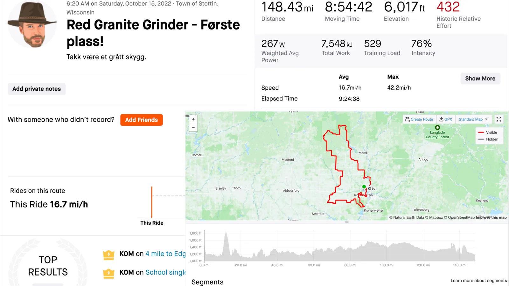
Red Granite Grinder 2022
“OK, what’s our strategy?” Forest said.
“Here’s what I’m thinking. I’m going to go freaking bananas on Rib and try to annihilate the entire field and get a gap. This sort of worked last year, except I got caught. Your job is to ensure you get in the chase group, so when I get caught, you immediately counter and get away. I will just sit and watch you guys ride away. After taking a breather, I will attack again, get a gap, join you, and we’ll ride in together hand in hand, singing a Beatles song while angels descend and hand us Miller Lites, and we’ll all be winners. Any objections?”
Forest and Victor looked at me blankly. They either thought I was insane or brilliant, but I’ll never know because neither of them said anything.
Forest, however, kept his wits about him and put a simple question to me, “So when you’re out there all alone, what kind of wattage are you trying to hold?”
“Wattage? Lol, I don’t know. I’m just going to go by feel.”
“Feel? What does that mean?”
“Uhhh, you don’t look at your bike computer. You focus on the sensation of effort and go harder or easier based upon how you feel?”
“I don’t understand.”
God, I love cyclists.

Before the start of Red Granite Grinder, I had two goals: not freeze and hide from Labi.
At the line, I sat off to the side and crouched down before the gun went off. I saw Labi looking around and yelling, “Matti????? Matti???”
I giggled inside. I wish I had a reason.
After the gun went off, hitters started hitting, and we all jockeyed to get the first wheel into Rib Mountain. Some of us, including me, followed the police escort into a side street, off course, for no reason.
Panic ensued, and everyone at the front had to swing back around and catch up with the lead group across icy wooden bridges. Someone crashed. Later I’d learn it was Labi, but I honestly had no clue; I was just trying not to die myself.
By the time we dove under highway 29 to the base of Rib Mountain, I was near the front with Forest. We looked at each other; I swung onto the turn, ripped across a few riders, and started smashing.
For a while, I didn’t hear anything behind me, which was surprising because I did the same thing last year and figured the field wouldn’t just let me walk away this time. I stole a look back and saw the form of Labi closing the gap. Yessssssssssss! King!!!
I half expected Labi to catch me and attack, but he slotted in behind me while I kept up a pace I couldn’t see on my Garmin. Honestly, I felt awful, but I just tried to make it hard, and by the time we swung onto the final approach to the dismount section, I turned back and saw only three dudes behind me. Perfect.
I dismounted, and the guy right behind me did not dismount and kept on riding. People yelled. I tried not to laugh. I didn’t mind. I had a secret.
The day before, Forest, Victor, and I spent four hours driving around Wausau. I wanted them to see Marathon county’s finest, our culture, our people, and most of all, Fleet Farm, the man’s mall.
Also, we looked at the forecast and realized it would be 28F at the start and that the rocks up on the top of Rib Mountain would be glazed with ice. Some people might find running on ice-glazed rocks shouldering a twenty-five-pound bike thrilling, but I’m into other things. Therefore, we decided to buy yak tracks.
The advantage was evident as soon as I started running on the rocks. Bare glazed rocks? Sure. Blind drops to unclear footing? Why not. Off-camber surfaces? Yak traks can do that too.
Confident I wouldn’t snap an ankle, I revved the old Nordic skiing engine and started bounding like a 90s ski pool Norwegian Olympic skier. I took ridiculous risks and raced headlong up and down the hiking trail, my bike banging against trees and rocks, but I was FLYING. Normally I’d be the first to admit that you shouldn’t buy into my delusion, but look at this Strava split on the hike a bike.
After I emerged, my yak tracks were hiked up to my ankles, and my shoe liner was shredded, but I was giddy and started sending it down the back of Rib.
It was faint, but I could almost hear the Beatles in my ear already.

But yeah, I got caught, not by Forest or Victor, like I hoped, but by Nathan and Adam.
Nathan was in the 144, Adam in the 85. Once we popped out of the new single track, they were on me. I stopped trying to fight it, and they joined me.
“MORNING, BOIS!!!” I almost felt like apologizing for my enthusiasm.
And so a paceline developed. I was…thirsty. I pulled the stretch from the turn-off to 9-mile to the 9-mile entrance, and after I pulled off, Adam said, “You planning on pulling that hard for 144 miles?”
Yeah. Yeah, I am.
They shredded me on the single track. Both of them obviously knew how to ride a bike, unlike me. I found it a lot more challenging than my indoor trainer and pointing my road bike straight, but they didn’t seem interested in dropping me and even waited up after I got tangled up with some people doing the 12 miler.
After we broke free of 9-mile into the rolling gravel leading to Edgar, I glanced back and saw no one. We were rolling. We were free. Just three dudes that like turning pedals and staring at each others’ butts. We rammed into the crosswinds hard and traded off monster pulls.
We made it through the Edgar State forest single track, dismounting and walking over sketchy, ice-covered bridges and finding our way through the course with speculative flags every 25 feet or so, which blended in with the leaves, making this section of the course feel more like playing hide and seek then racing.
Eventually, we made it to the second aid station, where I found my family had expertly set up three different blankets with the food Forest, Victor, and I had picked the night before and separated into bags.
I leaped off my bike, my brother filmed, and my poor mother and father tried to pull off my shredded shoe covers and yak traks that threatened to get caught up in my bottom bracket. Somewhere there’s an incredibly emasculating picture of me on all fours with my cramping legs stretched out and my mother trying to pull the yak traks off my foot. I hope it’s never found.
By this time, Adam and Nathan had left and disappeared in the distance. I wasn’t annoyed they left without me. More than anything, I was just sad that I had to ride alone.
Eventually, I caught and passed Nathan, bridged up to Adam, who was receiving a feed from his wife just outside Rib Falls, and after glancing back to see if he was going to keep trading pulls with me, decided to pour on the gas since it looked like he was sitting up.
Nathan receded into the distance, but just as I crested a riser, I nearly lost bowel control when I realized someone was behind me. It was Adam. Jesus. He closed that gap like it was nothing. Part of me wondered if he wasn’t really in the 85-mile race but actually in the 144 and pretending not to be. Casually, I looked at his race number plate. Indeed, it was yellow, not orange. Relief washed over me.
“You’re not thinking of carrying on and doing the 144, are you,” I asked.
“Nah. My son has a pee wee game this afternoon. Can’t be here all day.”
“Oh, that’s neat. Bummer you can’t be here all day!” I lied. I sure liked Adam’s company, but I wasn’t a big fan of his legs. The dude was a monster.
Adam fist-bumped me as we approached the turn-off for the 85 miler and the 144.
“You ride like a wild animal, man. I’ve never seen anyone go harder on the downhills. Good luck!”
“Likewise!” I said.
And with that, I turned my gaze to the endless, rolling hills in front of me.
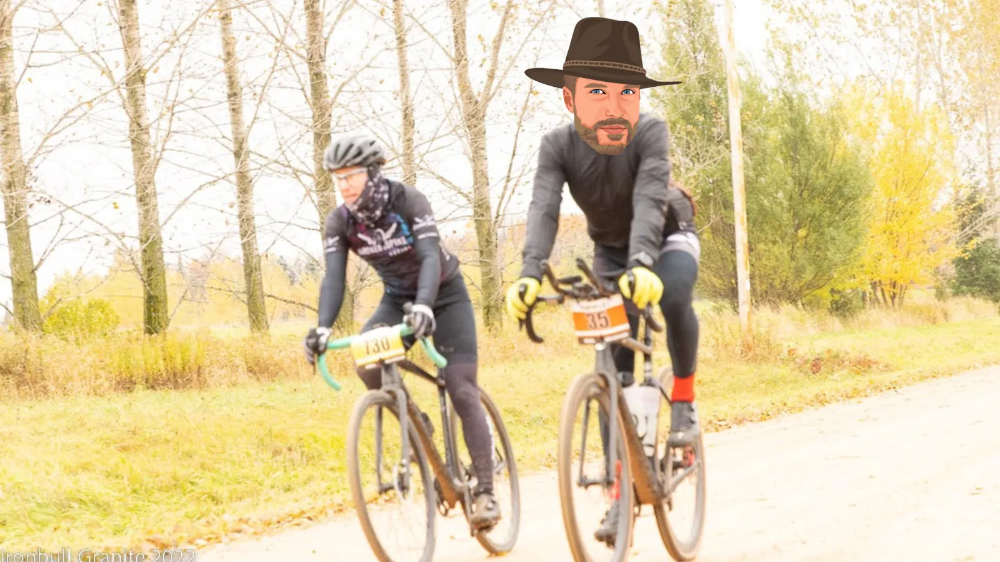
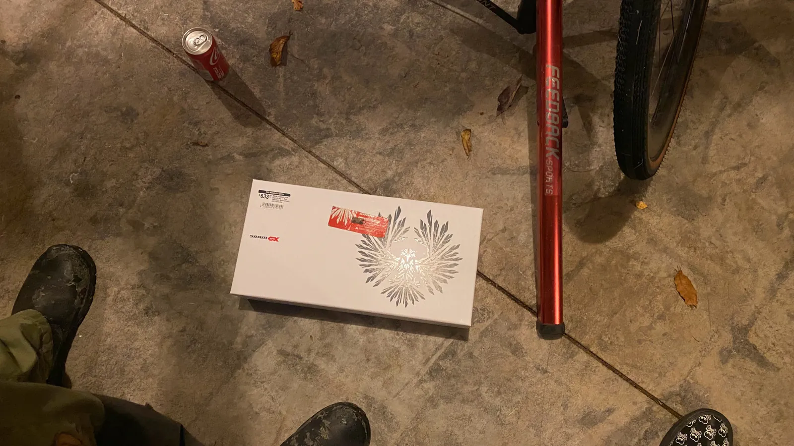
“OK, Victor, rock paper scissors for who is giving Matti their bike.”
Twelve hours before the Red Granite Grinder started, my SRAM AXS Derailleur died. Fried. Done.
“Yeah, that happens sometimes. The upside is they’ll probably warranty it. The downside is you’re not racing tomorrow on that. Do you have any friends in Wausau with a SRAM AXS derailleur you can borrow?”
I stared blankly at Forest. I wanted to say, “Forest, I have one biking friend in Wausau, and he texted me saying he was going to line up with my name written on blood on his forehead.”
Instead, I just said, “Nope.”
It was 7 pm, an hour after most shops in the area called. I thought the battery had just died. Forest knew better. My bike wasn’t shifting like garbage because my limit screws were off; it was shifting like garbage because my derailleur was fried.
We all realized this in my parent’s garage at once and stared at each other.
Before Victor and Forest began their Rock, Paper, Scissors game, I interrupted.
“No – I’m not taking anyone’s bike. If we can’t figure this out, I’m doing what I should be doing as your coach- going out on the course and supporting you guys.”
That ended that.
Two months of panic training after Norway, watching my diet, taking time off from work, dropping crazy money on travel, being away from my family for a week, driving 16 hours with all my gear from Colorado to Wisconsin, and all of it for nothing because the electronic derailleur on my 2022 Cervelo Aspero gravel bike decided to die the night before.
Murphy’s law strikes again. It was over.
Or was it? Murphy might be a killer, but Murphy hadn’t met Forest Hieptas before. Suddenly, Forest snapped to action.
“Call Rib Mountain Cycles. I know it’s been closed for about an hour, but maybe the mechanics are staying late and having beers. If they pick up, there might be a chance they have another derailleur on hand. Maybe they’ll keep the store open and let us swing by and buy it.”
So I did. Someone picked up just as I thought the ringing was headed to voicemail.
“Hello.”
“Hi, I’m racing tomorrow, and I’m screwed.”
“Oh.”
“You don’t have a SRAM AXS derailleur lying around, do you?”
“Let me check.”
(rustle, rustle, rustle)
“Ya, one left. Come by and pick it up. I’ll leave the door open for ya.”
No shit.
Rib Mountain Cycles saved my race for the second year in a row before it even began. Forest and I picked it up, I tried not to make it awkward by hugging the store owner, and then we returned to my parent’s house and installed the derailleur before dinner.
You’d think I could chill out by then, but my heart rate was still jacked. A week before, I had to connect the shifting on the bike via the SRAM app on my phone, and it ended up spending 2.5 hours to do it because the app is hot garbage. There was enough yelling. I thought I’d get a noise complaint from the neighbors.
It was 10 pm, and I knew I had to go through that process again. Except for this time, I was tired, and I HAD to get it paired, or I still couldn’t ride tomorrow because the bike wouldn’t shift.
Seventy minutes later, it still wasn’t paired. I fantasized about tracking down the SRAM app engineers and pushing them out of a second-story window. Forest texted me a link to a Youtube video of Samuel L Jackson entitled ‘Go the F**k to bed.” Well, I wasn’t, not until I got the shifting to work.
By the time 11:45 pm rolled around, I was desperate, quit the app and frantically searched YouTube for any hacks.
Five minutes later, I found one and paired everything perfectly in under a minute. Good Lord.
It was 12:30 am. I finished the final food prep for the next day and got to bed by 1 am. I couldn’t sleep – the pairing process kept my heart rate pinned at 80 bpm, and I lay awake in bed listening to Forest while the hours ticked by.
It was 3 am by the time I finally passed out. The alarm clock was set for 5 am. Game on.
The section above, by the clock
The night before the race
Click a column to sort. Every time is the post’s own.
| When | What happened |
|---|---|
| 7 pm | The derailleur is fried; most shops closed an hour earlier. Rib Mountain Cycles picks up and has “one left.” |
| 10 pm | New derailleur on; pairing it in the SRAM app starts again. |
| Seventy minutes later | “It still wasn’t paired.” |
| 11:45 pm | Quits the app and searches YouTube for a hack. |
| Five minutes later | Finds one; pairs everything “in under a minute.” |
| 12:30 am | Final food prep. |
| 1 am | In bed, heart rate “pinned at 80 bpm.” |
| 3 am | Finally asleep. |
| 5 am | Alarm. |
7 pm
What happenedThe derailleur is fried; most shops closed an hour earlier. Rib Mountain Cycles picks up and has “one left.”
10 pm
What happenedNew derailleur on; pairing it in the SRAM app starts again.
Seventy minutes later
What happened“It still wasn’t paired.”
11:45 pm
What happenedQuits the app and searches YouTube for a hack.
Five minutes later
What happenedFinds one; pairs everything “in under a minute.”
12:30 am
What happenedFinal food prep.
1 am
What happenedIn bed, heart rate “pinned at 80 bpm.”
3 am
What happenedFinally asleep.
5 am
What happenedAlarm.
Times and quotes from the post; nothing added.
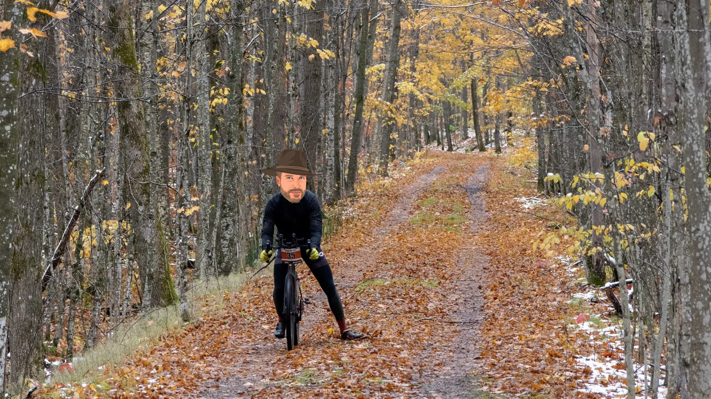
As I approached a gate toward the end of the snowmobile trails, something exciting happened – I squeezed my brakes, and my bike did not brake.
This surprised me since if I didn’t stop, I was sure to close-line myself against a steel barrier at fifteen miles an hour.
In a panic, I did what any 90s kid would do – I Fred Flinstoned, dragging my foot over the ground until I arrested enough speed not to challenge the steel gate.
After I cleared it, I gave the brakes another tentative squeeze. Nothing, nada, no purchase. They may as well not have existed.
Whelp, shit just got more exciting.
Mario Cippolini, a famous Italian bike racer, once said, “If you brake, you lose,” but one thing Mario Cippolini never had to do was descend 32nd avenue after the Billy Goat Hills into a 90-degree turn. How did I know that? Because I once led my friend through a blizzard in a car through the Billy Goat Hills, lost control, and he smashed into me with his Audi from behind and got so mad he punched a stop sign.
Dread grew in me. While I was trying to get through the remains of the snowmobile trail, another part of me kept running the math in my head, trying to calculate whether I could really get through the last fifty miles of the course, only dragging my feet on the ground when I needed to brake.
At the end of the equation, I figured I could. On the other hand, I flunked Calculus in college. Somehow, I needed to get some brakes back.
So I set the bike down and started cranking on Juin’s useless experiment in mechanically actuated disc brakes. As I sat alone, I cursed to no one and got nowhere. After several minutes the futility was obvious. Dive bombing corners blind? Sure, why not!
Eventually, I got to the top of the course and saw my parents, who immediately shut down any remaining enthusiasm I had remaining in their greeting, “Nathan is five minutes behind you.”
Five minutes? That’s it? Jesus.
I reported the bad news fast and without tact. “I have a major problem – I can’t brake. I need pliers. Where is the mechanical bag?”
My parents reported there was NO mechanical bag because Andy had it. Forest had flatted six times and pulled out. All I had was the tools I took with me and food bags filled with pop tarts.
“Dad, you don’t have pliers on you?”
“I don’t think so.”
“Are you F***ing kidding me?” I said.
During my entire childhood, my father insisted on traveling everywhere with a full tool belt in the back of the car. Why? Because “You never know.”
Well, I knew NOW that having pliers would be freaking helpful. The ONE TIME we actually needed his tool bag, he didn’t have his tools.
We turned the bike over, blew water through the brakes, and tried cranking on the useless screw Juri provided to micro-adjust in this situation.
Nothing.
After 5 minutes of this, I grabbed a water bottle my mother handed to me, raised a giant middle finger to the heavens, and yelled ‘Goddamn it!”, slamming my water bottle down on the ground. It shattered.
“I’m going,” I said.
“Andy is picking up Forest and 15 minutes away. He’ll find you,” my mother said.
Fifteen minutes? Great. I may as well pull out.
The aid station at the top of the course was a mile further along. I rolled up, dragged my foot, and saw a table with volunteers and a few hunters.
“Does anyone have pliers?”
Without missing a beat, a hunter whipped pliers out of their hunting vest, grabbed my bike, and helped me cinch down the brakes so tight that the wheel barely turned. I squeezed the brake.
It was shit, but it was something.
I gave him back the pliers.
“Thanks,” I said.
“I never go anywhere without it,” the hunter said. “You should think about that.”
We stared at each other for a second, and then I took off into the final off-road ATV section of Red Granite Grinder.
After nine minutes of messing with the brakes, I was finally away.
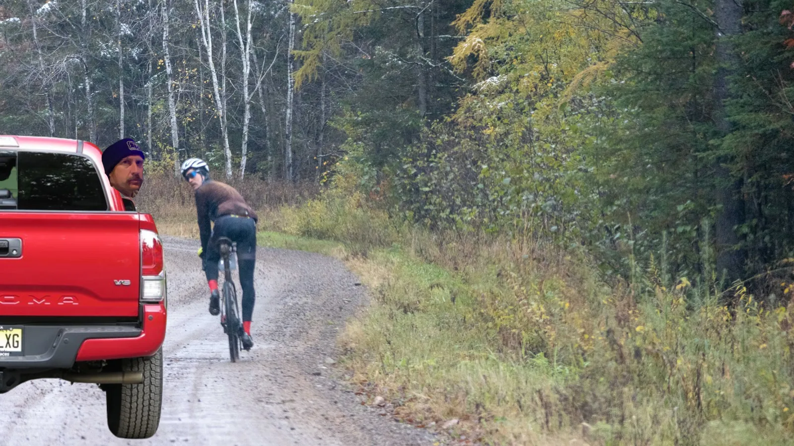
As I emerged from the snowmobile trail, my brakes were gone again – the mud and grit had chewed up the brake pads back to nothing, but I didn’t care. I didn’t have time to mess with it. As long as I looked again, Fred Flinstoned, I would probably stop.
As I cruised South, a truck pulled up. I looked over. It was my brother and Forest.
“Helllllloooo!!!” they said.
“Ummm, HEY guys!” I said. “Hey Forest, I have zero brakes. Anything I can do?”
“Not without stopping for fifteen minutes.”
“So I’m screwed.”
“Yep! Wanna stop?”
“No.”
“You’ve got six minutes last time I checked.”
“Neat.”
“Anything else I can do?”
“Bye.”
And they sped off.
Shit got dark. I felt waves of nausea. I knew I had to eat, but I didn’t want to. Every time I got a clear look behind me, I saw nothing.
I did some math. Two hours left and roughly 40 miles to go. If I have six minutes, that’s like two miles, so to catch me, the guy behind me would have to be going 2 miles an hour faster than me just to catch me.
Nah. No way. Not going to happen, even if I hobble in at Z2.
And yet, as I stared into the grim, gray haze of shrouded, rolling gravel, I knew, somehow, that wasn’t true. The math was correct, but I knew, intuitively, I was missing something.
The wind picked up, and a voice from last year rippled through the maple stands.
“Ask God for strength; he gives you trials.”
Something was coming.
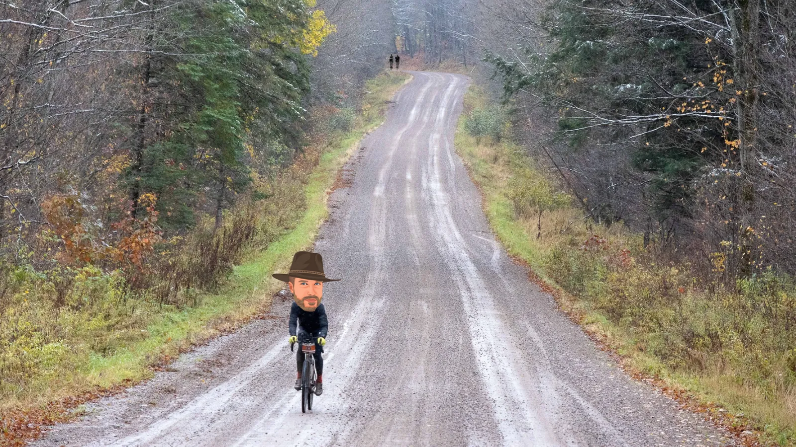
When I turned, I saw them. Two specs in the distance, telltale flashes of white on black swapping, moving in and out of the dim light.
FFFFF!!
Last I heard, I had five minutes. That was not five minutes. And I had not seen them. So if I hadn’t seen them, they were closing on me. Which meant that, no, I wasn’t rolling into the finish easily. I had a fight on my hands.
I wanted to vomit. I had consumed enough sugar to induce instant diabetes in any horse, much less a human, and the thought of having more almost made me wretch.
But they were coming. They were coming for me.
I was tired. I was barely eating. But I wasn’t so dead that something I didn’t want to access wasn’t available – sheer willpower.
People idolize willpower. They think that’s how things get done. But the people that believe that rarely get in a situation where that’s what they need to do to finish the thing.
Willpower isn’t something you tap into when you’re feeling fresh. Will power is your last reserve; it’s what your turn to when you have nothing else, AND you’re prepared to pay the price.
Notice that final clause – you have to pay the price. The price isn’t pleasant. The price isn’t a sunny day. The price is ugly. The price is feral; it’s the last desperate violence of a cornered animal; it’s reaching down and twisting your guts, taping rage, and spending something you won’t get back because you can’t stand the thought of the alternative.
I wasn’t sure I wanted to do that. But then, I’m not totally in control of me anyway.
Truth is, there are parts of you you get when you’re born or early on, and you might not notice them, might not even know they exist, until it’s time.
As they drew closer, someone other than me decided – F**k it.
I opened two gels and smashed them. My throat tried to send them back, but I dug in and swallowed. It was on.
I knew what they would do. They would catch me, and they would try to kill me. I knew exactly where. I wasn’t worried about that. What I was really worried about was that my brakes didn’t work. The only way I could sort of stop was by dragging my foot on the ground. I knew the course, so I knew there were several places with 90-degree turns and steep downhills. I had to hit them slower than them, so they’d just catch up there even if I could bury them on the hills.
I had no idea what I was going to do.
They caught me and kept pulling hard. They ripped a pace line and wanted me to pull through. Lol, no, are you high? I just sank to the back of the pace line and chilled.
We came to the first extended downhill, and I let a gap open up so I could make the turn. We turned onto the gravel pit climb, and they had 50 meters on me. I closed, and they both looked back and started hammering. I glided up to them, and we were even by the top. They looked at each other and then at me, and I smiled.
We ripped down the Billy Goat Hills, and I tried not to think that if anyone decided to pull out of a driveway, I was just going to T bone them at 45 miles an hour.
But no one did.
So we hit the first billy goat. The Kid, built like a tank with a seemingly 500-watt FTP, started smashing to the right, and I told him to get the right in case a car came over the top of the hill in front of us, honestly out of concern but also to make him cross the road, so it was easier to hang onto his wheel. We crested, and the Kid and the person I would later learn called Adam looked back at me. I smiled.
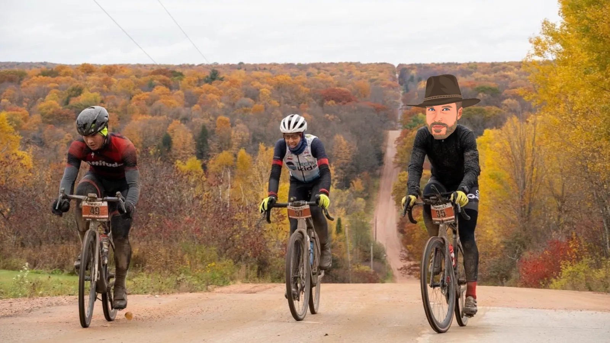
One Bill Goat to go. The one I used to hit 80 mph in my ’92 Honda Civic in high school on the way to school.
I knew this was going to suck. The last billy goat goes on forever, and the end is dumb steep. We hit it as one, and everyone just started ripping hard. I knew there was nothing else to do but eat pain, so I just swallowed nails and never let any wheels pull away. The Kid’s derailleur was skipping, and he was swearing under his breath, and I considered lighting it up then and there and putting a gap on these guys, but where was I going to go? I knew a 90-degree downhill awaited me, and they’d catch me while I dragged my foot down the downhill.
We crested as one, and the boys looked back at me. I smiled, and I could tell they were confused. As if to say, ‘We caught you without trying. How are you not getting dropped?”
The Kid said, “You guys aren’t very talkative.”
Um, no, I’m not in a chatty mood. 50/50 I’m about to hit this downhill at 25 miles an hour and shoot off into the ditch.
Oh yeah, during these attacks, I had done everything in my power NOT to let on that I had zero brakes. I knew if I had, they’d take advantage of that, but I was honestly kind of surprised they weren’t surprised that I let a 50-meter gap up every time we went through a downhill corner and never took advantage of it. Instead, they looked back at me while I quickly turboed up to them after dropping myself on nothing. Good for me.
One hill remained – Brokaw.
I expected the Kid to unleash hell, but he didn’t. He seemed kind of pinned. Adam seemed to think the pace wasn’t high enough, swung around, and tried to drop both of us, but we just hung on. I get why he did what he did. He figured he wasn’t winning a sprint, so he shot his shot, but as we crested, it was all together. I quietly thanked my stomach for tolerating another 75 grams of sugar an hour earlier.
Nothing but flats and downhills remained until the finish.
As we crested the hill, I thought,’ How the hell was I going to shake these guys?”
I have this old friend I don’t like because he’s a better bike racer than me, not because he’s more physically talented, but because he’s smarter. I always hated that about bike racing. I always thought that unless the strongest guy won, the race was bullshit.
What took me years to realize is that, no, bike racing, as in life, isn’t fair. Sure, the strongest guy should win. But do you know who wins?
The guy who crosses the finish line first.
I’ve raced some bike races. I was starting to notice something. The Kid was taking monster pulls for no particular reason. I was like being behind a motorbike, but no matter how hard he pulled, he wasn’t overcoming the power of the draft, and despite some stretching elastic, both Adam and I could hang.
So, lacking brakes and a hill that ended at the finish, I reached into my ditty bag of tricks.
As we approached a long, fast downhill, I let the gap between the Kid and me open up. Adam was behind me. The gap got large. Adam didn’t want to come around. Finally, I said, “You going to let him just ride away?”
Adam rode after him.
As we entered the downhill, the Kid was away with Adam in pursuit. I wound myself up in a sprint and then aero tucked, something they weren’t doing. I hucked down the hill, caught Adam’s draft, and just as I was about to hit his rear wheel, I shot out of his slipstream, going about five mph faster than him, and never looked back.
By the bottom of the hill, Adam was gone. I had opened up a 50-meter gap on him. I couldn’t believe it – it worked.
I was going so fast, in fact, that I glided up on the Kid. He did not look back. Another move occurred to me in that instant. If I attacked him right now when he didn’t know I was there, there’s a chance I could get enough of a gap that even if I had to Flinstone the curves on the bike path into the finish, I would have enough time to stay away.
As soon as I entered his slipstream, I started hammering, rocketing out of his slipstream. I immediately got a gap. However, 5 seconds into the effort, every muscle in my legs cramped at once, and I had to sit back down.
I was dead in the water.
The Kid caught me easily, but instead of attacking me, as I would have done, he just resumed pulling at about 55 mph. I hopped into his slipstream and looked back, watching Adam fade into a dot.
Whelp. I was sure I was going to finish third. Now second was a lock, but how the hell was I going to finish first? The Kid was a mutant and looked like he could sprint, and God knows I can’t sprint, nor could I brake, and all we had left was twisty bike paths, so what the hell was I going to do?
I guess try to sprint?
I followed him, which sucked because every time the road twisted, a gap opened up as I Fred Flindstoned to avoid flying into the ditch, but I stayed close with enormous effort. Honestly, I was starting to give up hope but told myself that I hadn’t ridden 143 miles hard just to give up in the last mile.
I noticed a sign as we dodged other people on the bike path. It said to go to the left. The Kid went straight. I yelled at him, but he just kept going straight.
Um.
I dragged my foot and went left, slowly rejoining the route to the finish, defeated. I figured the Kid would realize he had gone the wrong way and rejoin it at the next turn.
"Matti Rowe wins Red Granite Grinder for the second year in a row!!!"
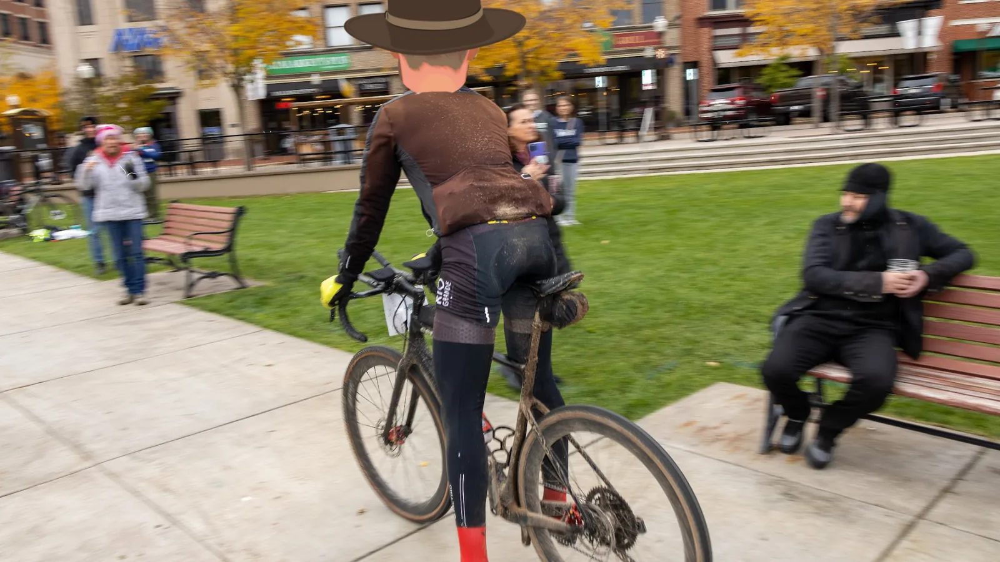
I was so surprised I almost endoed going over the finish line. I collapsed after it without really meaning to, sliding out on the pavement in shock.
I won. I really freaking won.
Run the same scenario 100 times, 99 times, and he wins. But not this one. That’s bike racing.
Did I deserve it?
I don’t know: I attacked at the bottom of Rib, got a gap from the entire field, rode with two other guys until mile fifty, then solo until mile 90, where I lost my brakes and lost nine minutes trying to fix them, and somehow survived five savage attacks without brakes in the last 10 miles against two monsters where nine times out of ten I would have just settled for not ending up in a ditch or the side of a car much less winning.
I guess I’m not sorry?
Look, I already earned my cutting board last year. I’ve had my moment in the sun. I never expected another one. I know I’m not that good. I’m just a kid from the Billy Goat Hills who picked up a bike at 25 and fell in love.
Do you know what I thought about all day?
I thought how lucky I was to be here in central Wisconsin, ripping around on the roads I grew up on, with enough time to get enough fitness to try to contend.
Unlike last year, I didn’t spend one second of the race thinking, ‘I might win.’
I didn’t let myself think that.
Instead, I pushed that away and noticed the cool Wisconsin Fall air, the endless forest turning by, the snow hitting my face, and the sound of the mud grabbing my tires. I tried to immerse myself in the present and enjoy the gift of emptying myself fully on the roads I grew up on.
I’m proud I opened those gels. No one would have known any differently. I could have given up – everyone would have understood.
But I opened them anyway because it’s who I am.
Quotes of the Weekend
“What is that tray of double-stuffed Oreos for?”
“The rice cakes.”
~Forest doesn’t mess around with race nutrition.
“You didn’t mention your mom’s cooking when you invited us out here to do this race.”
~Victor, who felt like I misrepresented what would be great about visiting central Wisconsin.
“Are you sure you don’t need to check my ID, ma’am?”
Victor, buying beer, to the blushing checkout lady in Walmart.
“Hey, do you want to know the dumbest person you can interview about this race? He’s standing over there. (points at me).”
~Victor, giving some helpful tips to the WAOW Channel 9 news correspondent.
“Oh shit, you’ve got aero bars on your bike.”
Labi, who didn’t recognize me at the start, realized what my strategy for the race was.
“You guys are easily my second favorite family.”
~Victor, to my family after they put him up, fed him, and supported him for three days. Perfect.
“You’re not old. You’re young challenged.”
Victor, to my 83-year-old dad – lol.
“What’s your name?”
“You must have heard of me.”
~Victor, to Andrea, the race director, as he was picking up his race packet.
“What is wrong with you?”
“It’s a lot faster to start with what is right with me first.”
Me, to my mother, after describing some of my race incidents.
“Dada! Dada! Dada!”
Lars to me as I arrived home. It’s nice when your kids seem to actually miss you.
“Is this your chair, sir?”
“It definitely is, Victor.”
~Victor, choosing, of all the available furniture, my father’s chair to sit in in the living room.
Thanks!
I’m aware this is turning into the encore for the Lord of the Rings: The Return of the King, but since in all likelihood my life is going to explode after this and I’ll never pedal a bike again, I figure now would be a good time to thank some people without which the Red Granite Grinder weekend wouldn’t even have happened, much less been a win.

My Brother (Uncle Andy)
My brother has been to three gravel races this year, even though he thinks bike racing is dumb and wishes I was into baseball.
Why does he come along? Because he likes kicking it with me.
Right back at you bro.
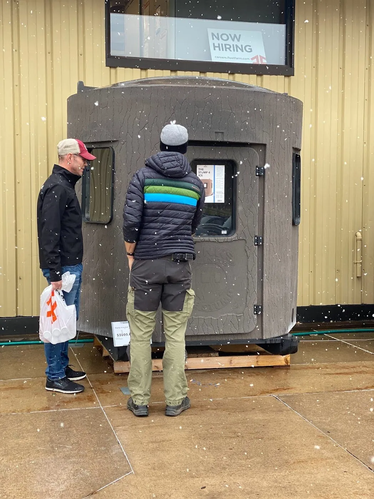
Forest and Victor
I coach Forest and Victor and convinced them to come out and do Red Granite Grinder with me.
They had mixed days: Forest flatted six times but Victor finished 4th (technically 5th) overall and won a cutting board.
But, as I’ve long learned in bike racing, results are neat, but have you ever spent consecutive days with the bois riding bikes, smashing food, and grab-assing?
I’m married, but damn I love these guys.
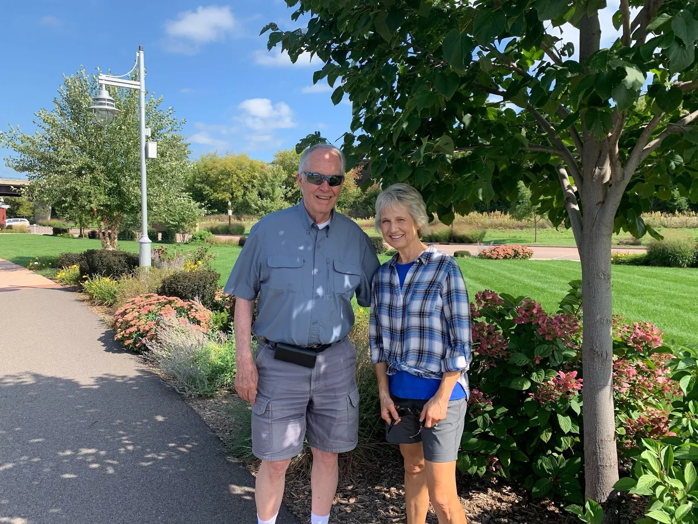
Thanks Ma (and Dad!)
At this point in my life, I’m just a barrier in the way of my parents getting access to the grandkids, but for one weekend every year when I come back from Red Granite Grinder, my parents sort of focus on me.
My Ma made delicious food and gave us every accommodation, and my father drove all over Marathon County until he nearly passed out supporting my friends and me.
Add it to my life-long tab.
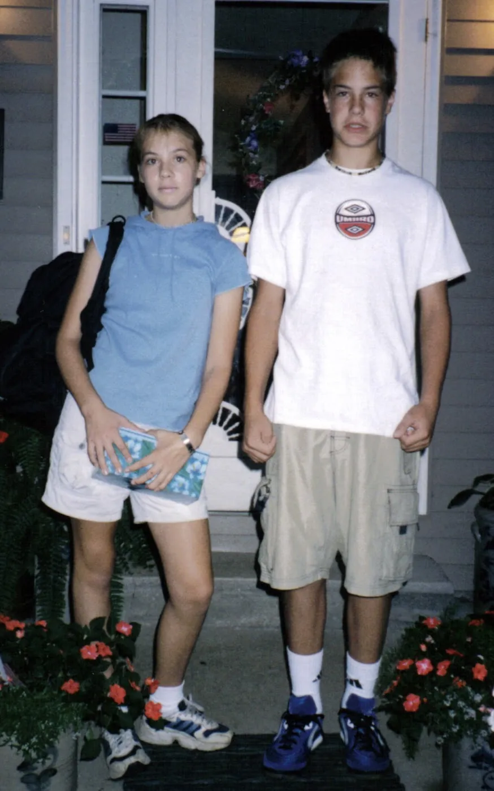
Thanks Sis’
My sister and her fiancé allowed me and the guys to crash at her place for two nights in their gorgeous house.
Then, they lied about not coming to the race and nearly gave me a stroke when they showed up at the race.
Better yet, my sister introduced me to a new irresistible snack food: Quest Birthday bars. Now it’s always my birthday.
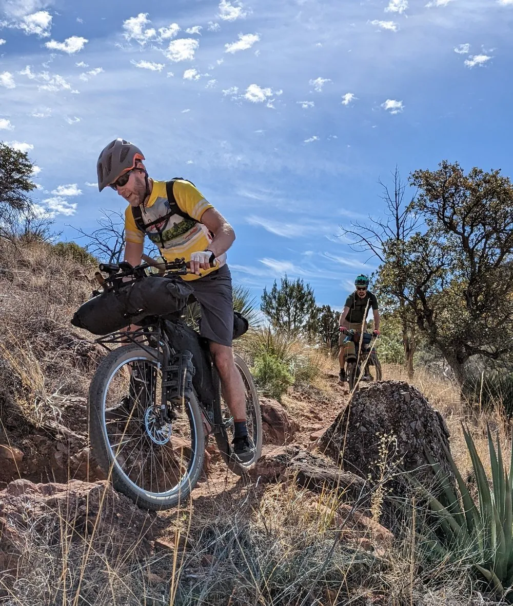
The Ironbull Organization
When I grew up in Wausau, bike racing wasn’t a thing. Thanks to Ironbull, it is.
I’m not lying when I tell Shane that Red Granite Grinder is the best gravel race around. It’s well organized, has a band, great location staged on the downtown, amazing course, phenomenal volunteers, food, beer, great schwag…I could go on.
Don’t think for a second it ‘just happens’. Shane and Andrea and their crew CRUSH themselves to put this on and make it the event that it is.
How can you honor that? Tell more people to show up. Let’s make Red Granite Grinder HUGE!
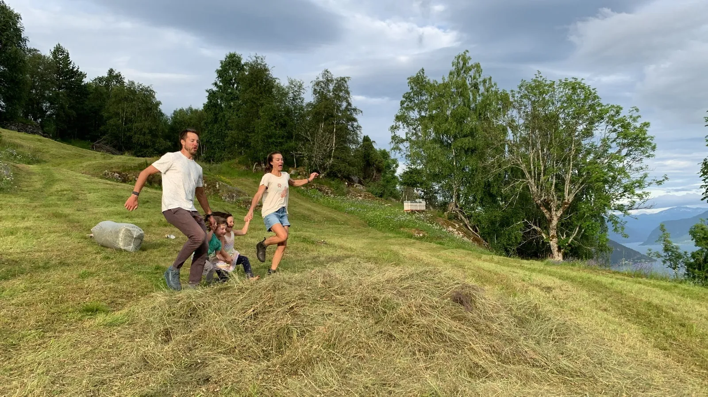
My Family
Without my wife, no bike racing.
Without my kids, no reason to pick up a time-consuming hobby so I appreciate them more when I’m with them. 🙂
Comments
6 comments from the original post. Comments are closed.
Kelly O'Day ·
Awesome report! Fun times.
Gregg Cisneros ·
Great article! It was an awesome day and I’m looking forward to next year!
Ed ·
What an experience. Thanks for sharing.
Animal ·
Sweet recap! I like that I went by the name Adam throughout. Ill keep the alias or I can just be refered to as Animal. Either one will keep me under the radar.
Nathan ·
I loved the recap! Glad I could be part of the story. Those were some monster pulls you did! Sorry I wasn’t able to hang with you after mile 50, my legs just couldn’t hold that pace for 90 more miles. I had tried to hold off the Kid and Animal when I spotted them in the distance at mile 120 something, but it was futile. After they caught me I had some shifting issues and lost their draft, and I was sure I wouldn’t place as they rode away from me. But I’m not one for giving up, as you never know what might happen, so I just pushed as hard as my legs would allow and to my surprise I took 3rd due to the Kid taking a wrong turn.
Imagining you flintstoning those turns paints quite the picture in my mind. I don’t know how you managed it, but a well deserved win for you Matti!
Jake ·
Ran into this while googling Red Granite race stuff. You are a talented writer. I have done this race several times and I was enthralled and laughing, not just at the experience but by your telling of it. Thanks for the chuckles!